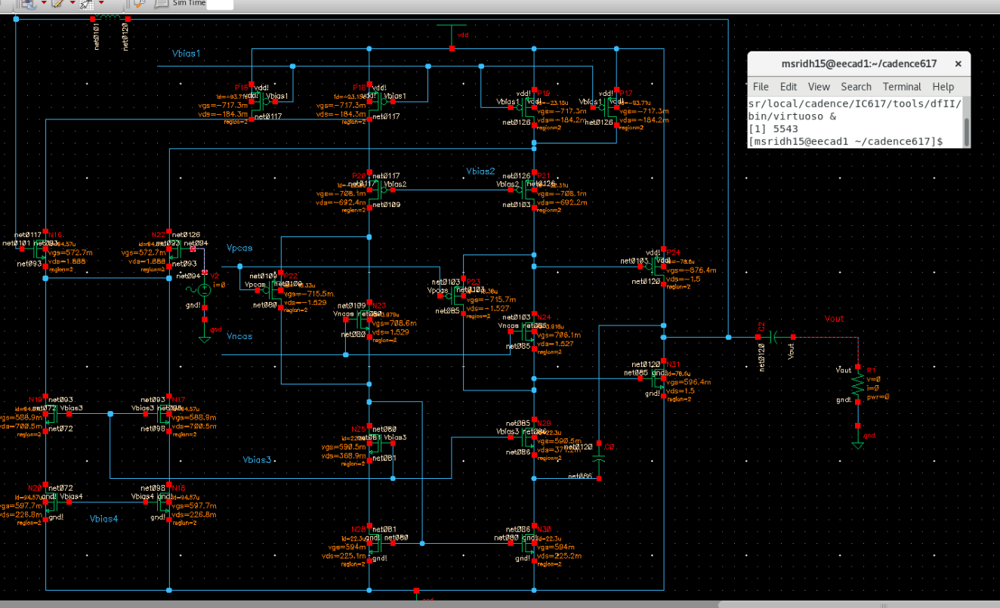
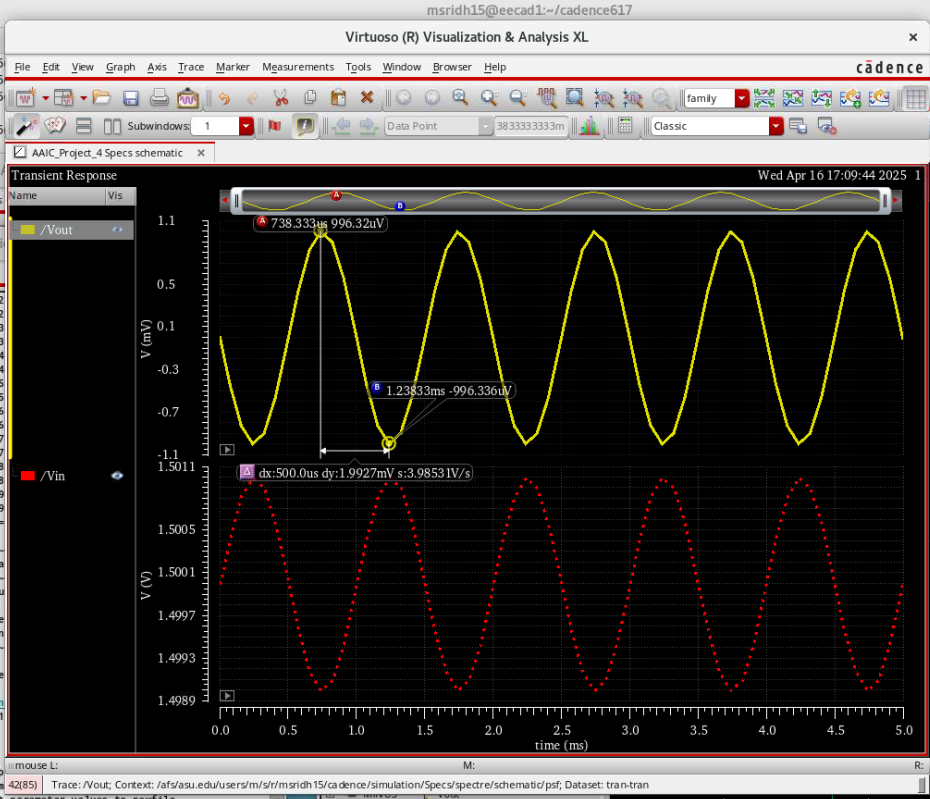
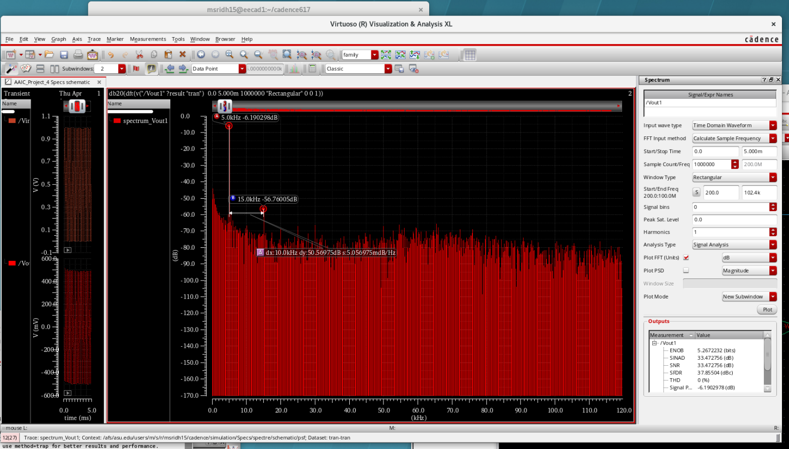
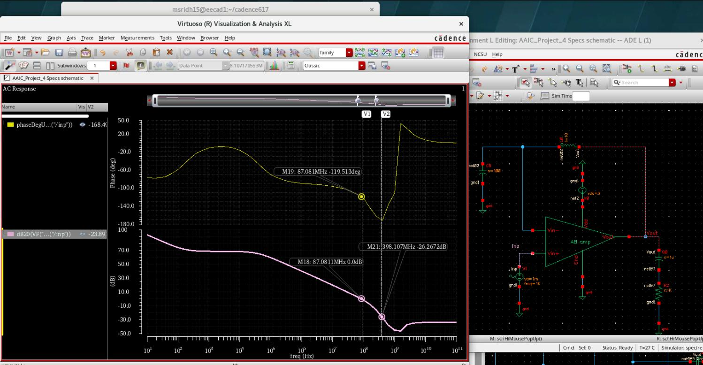

<section id="project-3" class="project-detail">
  <div class="project-container">

    <h1 class="project-title">
      Single-Ended NMOS Folded Cascode Amplifier with Class-AB Output Buffer
    </h1>

    <p class="project-subtitle">
      EEE523 – Advanced Analog IC Design (Cadence Virtuoso)
    </p>

    <!-- ================= OVERVIEW ================= -->
    <h2>Project Overview</h2>
    <p>
      This project involves the transistor-level design and simulation of a
      <strong>single-ended NMOS input folded cascode amplifier</strong> integrated
      with a <strong>Class-AB output buffer</strong>. The objective was to achieve
      high open-loop gain, adequate stability, low distortion, and low noise while
      operating under strict power constraints.
    </p>
    <p>
      The complete design was implemented and verified using
      <strong>Cadence Virtuoso and Spectre</strong>, with performance validated
      through extensive transient, AC, distortion, noise, PSRR, and CMRR simulations.
    </p>

    <!-- ================= TOPOLOGY IMAGE ================= -->
    <div class="project-image">
      
      <p class="image-caption">
        Fig. 1 – NMOS folded cascode amplifier with Class-AB output buffer
      </p>
    </div>

    <!-- ================= SPECIFICATIONS ================= -->
    <h2>Design Specifications</h2>
    <ul>
      <li><strong>Supply Voltage (VDD):</strong> 3 V</li>
      <li><strong>Quiescent Power Dissipation:</strong> ~2 mW</li>
      <li><strong>Total Bias Current:</strong> ~666 µA</li>
      <li><strong>Input Common-Mode Range:</strong> 1.5 V – 2.5 V</li>
    </ul>

    <!-- ================= TOOLS ================= -->
    <h2>Tools & Software Used</h2>
    <ul>
      <li><strong>Cadence Virtuoso:</strong> Schematic capture and circuit design</li>
      <li><strong>Cadence ADE:</strong> Simulation setup and parametric sweeps</li>
      <li><strong>Spectre Simulator:</strong> Accurate transistor-level analysis</li>
    </ul>

    <!-- ================= TRANSIENT ================= -->
    <h2>Transient Simulations</h2>
    <p>
      Transient simulations were performed with the amplifier configured as an
      inverting amplifier with a gain of 0 dB. Output swing and large-signal behavior
      were verified under nominal bias conditions.
    </p>
    <ul>
      <li>Achieved 1 V<sub>pp</sub> output swing</li>
      <li>Stable operation across input common-mode range</li>
    </ul>

    <div class="project-image">
      
      <p class="image-caption">
        Fig. 2 – Transient output waveform showing 1 Vpp swing
      </p>
    </div>

    <!-- ================= VCM SWEEP ================= -->
    <h2>Input Common-Mode Sweep</h2>
    <p>
      The input common-mode voltage was swept from 1.5 V to 2.5 V in 200 mV steps
      while observing the transient output response. This verified correct amplifier
      operation across the specified common-mode range.
    </p>

    <!-- ================= DISTORTION ================= -->
    <h2>Distortion Analysis</h2>
    <p>
      Harmonic distortion was evaluated using a 5 kHz sinusoidal input at mid-supply
      common-mode voltage. The third-order harmonic distortion (HD3) was extracted
      using spectrum analysis.
    </p>
    <ul>
      <li><strong>HD3 ≈ 50.6 dB</strong></li>
    </ul>

    <div class="project-image">
      
      <p class="image-caption">
        Fig. 3 – Frequency spectrum showing third-order harmonic distortion
      </p>
    </div>

    <!-- ================= SLEW RATE ================= -->
    <h2>Slew Rate Measurement</h2>
    <p>
      Slew rate was measured by configuring the amplifier as a unity-gain follower
      with a 1 pF capacitive load. A piecewise linear (vpwl) input was used to
      extract the large-signal slew behavior.
    </p>
    <ul>
      <li><strong>Slew Rate ≈ 10 V/µs</strong></li>
    </ul>

    <!-- ================= AC ================= -->
    <h2>AC Gain & Stability Analysis</h2>
    <ul>
      <li>Open-loop DC gain: <strong>~98 dB</strong></li>
      <li>Unity Gain Frequency: <strong>> 10 MHz</strong></li>
      <li>Phase Margin: <strong>~61°</strong></li>
      <li>Gain Margin: <strong>~26 dB</strong></li>
    </ul>

    <div class="project-image">
      
      <p class="image-caption">
        Fig. 4 – AC magnitude and phase response
      </p>
    </div>

    <!-- ================= PSRR / CMRR ================= -->
    <h2>PSRR & CMRR</h2>
    <ul>
      <li>PSRR @ 10 kHz: <strong>> 70 dB</strong></li>
      <li>CMRR @ 10 kHz: <strong>> 70 dB</strong></li>
    </ul>

    <!-- ================= NOISE ================= -->
    <h2>Noise Analysis</h2>
    <p>
      Noise simulations were performed to evaluate the input-referred thermal noise
      performance of the amplifier.
    </p>
    <ul>
      <li>Input-referred noise floor: <strong>≤ 15 nV/√Hz</strong></li>
    </ul>

    <!-- ================= DESIGN CONSIDERATIONS ================= -->
    <h2>Design & Matching Considerations</h2>
    <p>
      Although physical layout was not part of this project, careful attention was
      paid to transistor matching and symmetry at the schematic level to ensure
      consistent circuit behavior.
    </p>
    <ul>
      <li>Matching of NMOS input devices</li>
      <li>Consistent sizing of folded cascode transistors</li>
      <li>Matched current mirrors in biasing circuits</li>
      <li>Symmetry between NMOS and PMOS current paths</li>
    </ul>

    <!-- ================= CONCLUSION ================= -->
    <h2>Conclusion</h2>
    <p>
      This project demonstrates a low-power, high-gain analog amplifier design that
      meets stringent requirements for stability, distortion, noise, and robustness
      across common-mode variations. The folded cascode topology combined with a
      Class-AB output buffer provides an effective balance between performance and
      power efficiency.
    </p>

  </div>
</section>
